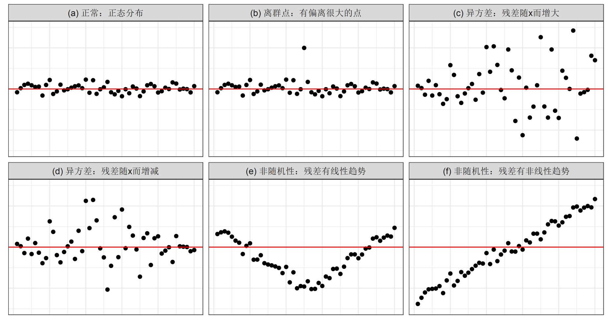
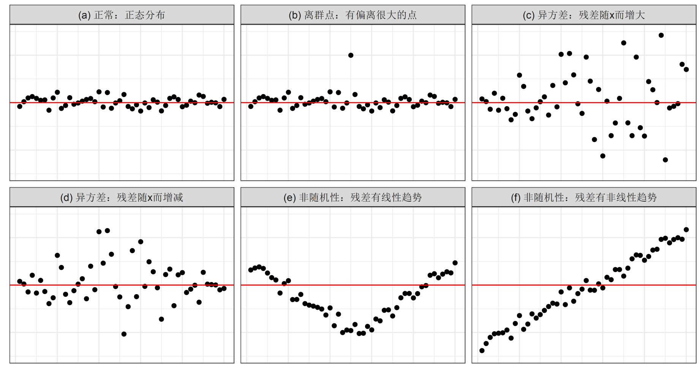
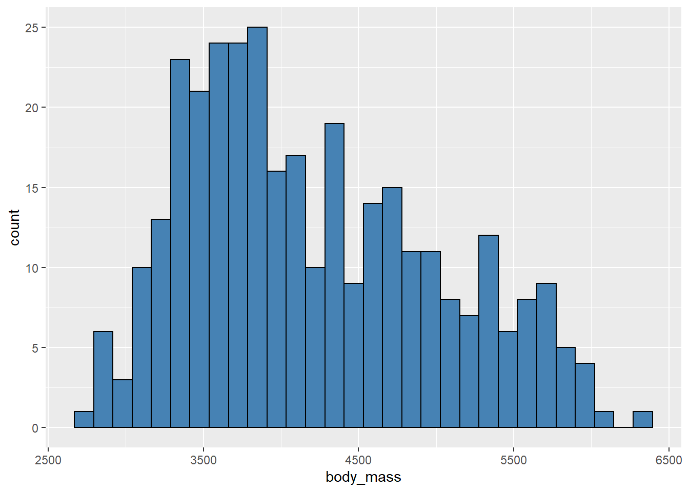
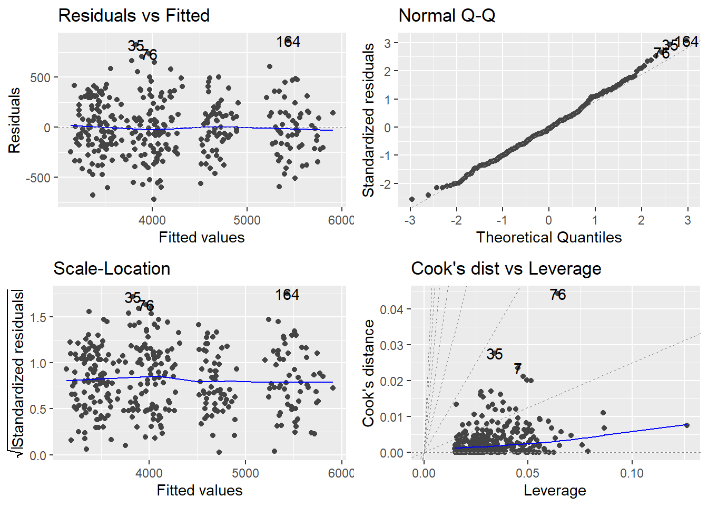

knitr::include_graphics("images/residual.jpg", dpi = FALSE)
回归分析是统计学核心算法，是计量模型和机器学习的最基本算法。
回归分析是确定两个或两个以上变量相互依赖的定量关系的一种统计分析方法。具体是通过多组自变量和因变量的样本数据，拟合出最佳的函数关系。
回归分析通常用于：
设y为因变量数据，x为自变量数据，假设两者间的真实（精确）关系为：
但在实际情况下，回归模型只能试图找到一种近似的关系代替它：
两者之差就是模型的残差：
我们总是希望把y和x的关系都留在模型部分，让残差部分最好只是白噪声（完全是随机误差，0均值，微小标准差的正态分布）：
此时说明回归模型建模成功，否则，就是模型尚未提取出充分的模型关系（欠拟合）。
回归模型的基本原则是：在没有显著差异的情况下，优先选择更简单的模型。如果更简单的模型已经足已充分建模，强行使用复杂模型会产生过拟合，反而降低模型的泛化（预测）能力
即 ，也成为可决系数（决定系数），反映了自变量能解释的方差占总方差的百分比。 值越大，说明模型拟合的结果越好。
均方误差：
均方根误差：刻画预测值与真实值平均偏离情况，是所有回归模型（包括机器学习中的回归算法）中最常用的性能评估指标。
knitr::include_graphics("images/residual.jpg", dpi = FALSE)
参看第22讲 回归分析部分
多元线性回归建模，若自变量数据之间存在较强的线性相关性，即存在多重共线性。此现象会导致回归模型不稳定，得到的模型被称为伪回归模型，并不能反映自变量与因变量之间的真实关系。
多元线性回归建模，需要做共线性诊断，识别出多重共线性，并处理多重共线性再建模。
多重共线性的解决办法（任选其一）：
# 企鹅的数据集 penguins，包含 333 个样本，是有关企鹅的特征信息，包括种类、岛屿、嘴长、嘴宽、鳍长、性别。
# 探索企鹅的体重与这些特征间的关系
library(tidyverse)
penguins <- read_csv("datas/penguins.csv") %>%
mutate(species = factor(species))
penguins# A tibble: 333 × 7
species island bill_length bill_depth flipper_length body_mass sex
<fct> <chr> <dbl> <dbl> <dbl> <dbl> <chr>
1 Adelie Torgersen 39.1 18.7 181 3750 male
2 Adelie Torgersen 39.5 17.4 186 3800 female
3 Adelie Torgersen 40.3 18 195 3250 female
4 Adelie Torgersen 36.7 19.3 193 3450 female
5 Adelie Torgersen 39.3 20.6 190 3650 male
6 Adelie Torgersen 38.9 17.8 181 3625 female
7 Adelie Torgersen 39.2 19.6 195 4675 male
8 Adelie Torgersen 41.1 17.6 182 3200 female
9 Adelie Torgersen 38.6 21.2 191 3800 male
10 Adelie Torgersen 34.6 21.1 198 4400 male
# … with 323 more rowsggplot(penguins, aes(body_mass)) +
geom_histogram(bin = 20,
fill = "steelblue",
color = "black")
lm(formula, data, …)：拟合多元线性回归模型。
formula设定模型公式，遵从Wilkinson表示规则，这里列举一些常用的写法：
y ~ .：包含所有自变量。x1 : x2：交互效应，即 项。x1 * x2：包括主效应和交互效应，即 的简写。I()：打包式子作为整体。y ~ ploy(x, 2, raw = TRUE)： 一元二次多项式回归，同 y ~ x + I(x^2)。y ~ ploym(x1, x2, degree = 2, raw = TRUE)： 二元二次多项式回归。log(y) ~ x： 对y做对数变换。这里我们先将所有自变量都用上，构建初始的多元线性回归模型（往往不是成功的模型）
mdl0 <- lm(body_mass ~ ., penguins)car::vif()诊断回归模型的多重共线性：car::vif(mdl0) GVIF Df GVIF^(1/(2*Df))
species 63.523199 2 2.823144
island 3.731695 2 1.389878
bill_length 6.099673 1 2.469752
bill_depth 6.101621 1 2.470146
flipper_length 6.797579 1 2.607217
sex 2.326898 1 1.525417只有分类变量的species的VIF值较大，其余均小于10，说明不存在共线性。
step()函数做逐步回归，剔除不显著的和共线性的自变量。逐步回归是以 AIC 值（越小越好）作为加入和剔除变量的判别条件，参数direction 设置逐步选择的方法： “both”, “backward”（逐步剔除）,“forward”（逐步加入）。mdl1 <- step(mdl0, direction = "backward", trace = 0)
summary(mdl1)
Call:
lm(formula = body_mass ~ species + bill_length + bill_depth +
flipper_length + sex, data = penguins)
Residuals:
Min 1Q Median 3Q Max
-779.65 -173.18 -9.05 186.61 914.11
Coefficients:
Estimate Std. Error t value Pr(>|t|)
(Intercept) -1460.995 571.308 -2.557 0.011002 *
speciesChinstrap -251.477 81.079 -3.102 0.002093 **
speciesGentoo 1014.627 129.561 7.831 6.85e-14 ***
bill_length 18.204 7.106 2.562 0.010864 *
bill_depth 67.218 19.742 3.405 0.000745 ***
flipper_length 15.950 2.910 5.482 8.44e-08 ***
sexmale 389.892 47.848 8.148 7.97e-15 ***
---
Signif. codes: 0 '***' 0.001 '**' 0.01 '*' 0.05 '.' 0.1 ' ' 1
Residual standard error: 287.3 on 326 degrees of freedom
Multiple R-squared: 0.875, Adjusted R-squared: 0.8727
F-statistic: 380.2 on 6 and 326 DF, p-value: < 2.2e-16结果给出了回归系数的标准误、显著性、回归模型的标准误等信息，基于理论的回归系数的置信区间，可以使用confint()提取。
confint(mdl1) 2.5 % 97.5 %
(Intercept) -2584.910585 -337.07867
speciesChinstrap -410.980430 -91.97296
speciesGentoo 759.746330 1269.50699
bill_length 4.224516 32.18434
bill_depth 28.380131 106.05513
flipper_length 10.226261 21.67423
sexmale 295.761031 484.02202由结果看出，该模型基本拟合成功，回归系数是显著的，模型的调整 为0.873。
# 计算模型均方根误差
library(modelr)
rmse(mdl1, penguins)[1] 284.3022分类变量，即取值是有限的类别值，如性别的取值为有限的男、女。分类变量不能直接应用到回归模型中，即使用0和1分别表示男女也不行，因为如果不加处理，计算机会将其单纯作为数值型变量处理。
R中，将分类变量转换为因子型或数值型，就可以不需要进行进一步处理。
自变量又称为特征，利用原有自变量构造新的自变量，就是特征工程。特征工程是改进模型的重要手段，也是数据挖掘/机器学习中的关键步骤。
多元线性回归相当于是用 1 次多项式去逼近真实的函数关系，如果提高的 2次，即把所有二次项包括交互项：都加入模型，拟合效果大 概率会有提升。但新加入的项，可能会有不显著或产生共线性。解决办法，就是用逐步回归进行变量筛选。
常用的构建特征方法还有：对特征做各种变换，连续特征离散化，比如年龄相差 1 岁影响不一定显著，但年龄段的差异，比如从青年到中年到老年，很可能会显著。
本案例中，我们将三个数值变量的二次项，以及交互项sex:island加入模型，在逐步回归剔除不显著项。
mdl2 <- lm(body_mass ~ species
+ sex * island + bill_length
+ I(bill_length^2) + bill_depth
+ I(bill_depth^2) + flipper_length
+ I(flipper_length^2), penguins) %>%
step(direction = "backward", trace = 0)
summary(mdl2)
Call:
lm(formula = body_mass ~ species + sex + island + bill_length +
bill_depth + I(flipper_length^2) + sex:island, data = penguins)
Residuals:
Min 1Q Median 3Q Max
-720.54 -186.53 -12.45 170.44 866.18
Coefficients:
Estimate Std. Error t value Pr(>|t|)
(Intercept) 91.78310 406.38476 0.226 0.821459
speciesChinstrap -254.99561 87.55622 -2.912 0.003838 **
speciesGentoo 997.95849 136.46800 7.313 2.09e-12 ***
sexmale 481.06258 57.19231 8.411 1.34e-15 ***
islandDream 94.23067 67.43795 1.397 0.163287
islandTorgersen 17.31454 76.16766 0.227 0.820318
bill_length 18.10266 7.08331 2.556 0.011057 *
bill_depth 68.81995 19.67010 3.499 0.000533 ***
I(flipper_length^2) 0.03944 0.00727 5.425 1.14e-07 ***
sexmale:islandDream -209.14039 68.10367 -3.071 0.002316 **
sexmale:islandTorgersen -124.31327 94.74643 -1.312 0.190434
---
Signif. codes: 0 '***' 0.001 '**' 0.01 '*' 0.05 '.' 0.1 ' ' 1
Residual standard error: 284.2 on 322 degrees of freedom
Multiple R-squared: 0.8792, Adjusted R-squared: 0.8755
F-statistic: 234.4 on 10 and 322 DF, p-value: < 2.2e-16模型mdl2的修正比mdl1的稍有提高，说明mdl2比mdl1有所改进，但同时也增加了模型的复杂程度。那么那个模型更好呢？
可以使用似然比检验lmtest::lrtest()或方差分析anova()比较两个模型是否有显著差异。
anova(mdl1, mdl2)Analysis of Variance Table
Model 1: body_mass ~ species + bill_length + bill_depth + flipper_length +
sex
Model 2: body_mass ~ species + sex + island + bill_length + bill_depth +
I(flipper_length^2) + sex:island
Res.Df RSS Df Sum of Sq F Pr(>F)
1 326 26915647
2 322 26000518 4 915128 2.8333 0.02469 *
---
Signif. codes: 0 '***' 0.001 '**' 0.01 '*' 0.05 '.' 0.1 ' ' 1可以看出，检验结果显示检验P值=0.025（小于0.05），说明两个模型有显著差异，应该选择mdl2。
理想的模型（标准化）残差应服从“0 均值小方差”（标准）正态分布，对于残差，通常是绘制（标准化）残差图、残差 QQ 图、残差直方图，或者对（标准化）残差的正态性、独立性、异方差性做统计检验。
library(ggfortify)
# 6个可选图形
autoplot(mdl2, which = c(1:3, 6))
# 残差正态性检验
shapiro.test(mdl2$residuals)
Shapiro-Wilk normality test
data: mdl2$residuals
W = 0.99532, p-value = 0.4156# 残差独立性检验
library(lmtest)
dwtest(mdl2)
Durbin-Watson test
data: mdl2
DW = 2.1403, p-value = 0.8806
alternative hypothesis: true autocorrelation is greater than 0# 残差异方差检验
bptest(mdl2)
studentized Breusch-Pagan test
data: mdl2
BP = 15.152, df = 10, p-value = 0.1266通过以上结果，可见mdl2可以通过残差正态性、独立性检验。
通过检验的回归模型，提供新的自变量数据框，使用predict()函数对因变量值进行预测。
newdat <- slice_sample(penguins[, -6],
n = 5)
predict(mdl2, newdat,
interval = "confidence") fit lwr upr
1 4242.245 4077.755 4406.735
2 4744.193 4674.208 4814.178
3 3856.964 3755.861 3958.068
4 3224.723 3098.889 3350.557
5 5521.082 5441.234 5600.931